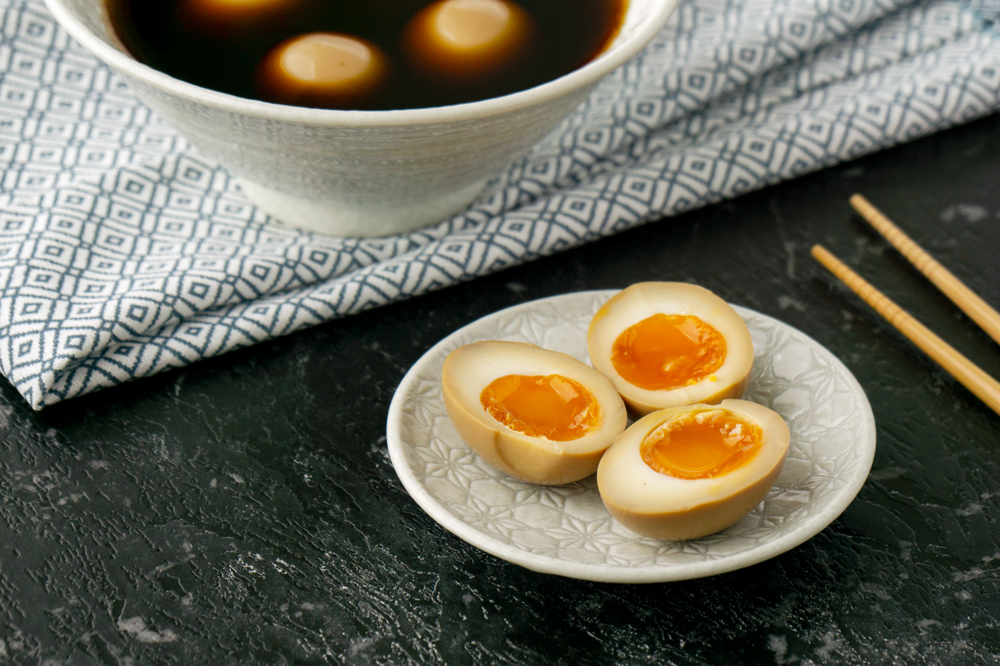

Ramen Eggs
味付け玉子
ajitsuke tamago

These fresh and flavorful eggs are a great addition to ramen and also make for a good snack.
Ingredients
- 1/4 cup Mirin
- 1/4 cup Soy sauce
- 1 Tbs Brown sugar
- 1/4 cup sake
- 6 large eggs
Instructions
- Boil water. Remove from heat.
- Put in eggs and return to heat. Boil for exactly 6-7 minutes.
- While eggs are cooking combine the remaining ingredients and mix well to make the marinade.
- Once the eggs are cooked immedietly remove from water and place in ice water.
- Once the eggs have cooled, place in the marinade and let them soak up the flavors for at least 12 hours.